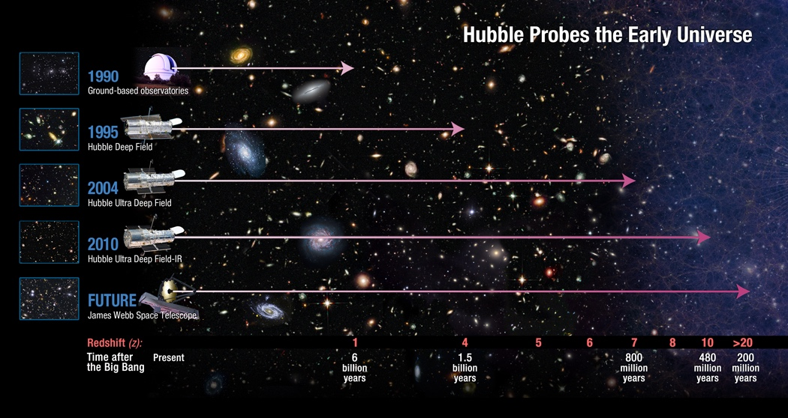

About Me

Education:
(2021 - present): PhD at University of Edinburgh (Supervisors: James Dunlop, Ross McLure, Derek McLeod)
(2016 - 2021): MPhys (1st class) at University of St Andrews (Supervisor: Rita Tojeiro)
Research Interests: First galaxies, cosmic reionization, galaxy formation and evolution, large-scale structure
Publications:
Donnan, C.T., McLure R. J., Dunlop J. S., et al., (2024), arXiv:2403.03171 : “JWST PRIMER: A new multi-field determination of the evolving galaxy UV luminosity function at redshifts z=9-15”
Donnan, C.T., McLeod D. J., McLure R. J., et al., (2023), MNRAS : “The abundance of z>10 galaxy candidates in the HUDF using deep JWST NIRCam medium-band imaging.”
Donnan, C.T., McLeod D. J., Dunlop J. S., et al., (2023), MNRAS : “The evolution of the galaxy UV luminosity function at redshifts z=8-15 from deep JWST and ground-based near-infrared imaging.”
Donnan C.T., Tojeiro R., Kraljic, K., 2022, Nature Astronomy : “The role of the cosmic web in the scatter of the galaxy mass-metallicity relation”
A full list can be found here.
Research

The First Galaxies
I use optical/NIR surveys from the ground and space to probe the earliest stages of galaxy formation and evolution.
I use these surveys to measure how the galaxy population evolves with cosmic time. Primarily, I study the evolution of the UV luminosity function and cosmic star-formation rate density at z=8-15 using JWST/NIRCam surveys such as PRIMER, JADES, NGDEEP and CEERS. In
Donnan et al. (2023) we presented a combination of a new sample of ultra-luminous galaxies at z=8-10 from ~1.8 sq. degrees of ground based imaging in COSMOS (using UltraVISTA), in combination with one of the first samples
of galaxies at z>9 from JWST. This reaffirmed the lack of evolution in the bright end of the LF as well as showing a slow evolution overall between z=9-15.
Galaxy Evolution in the Cosmic Web
On the largest scales, galaxies are distributed into a web-like structure of dense nodes connected by filaments and separated by vast voids.
Using large spectroscopic galaxy surveys such as SDSS and DESI as well as cosmo-hydro simulations such as Illustris TNG, I explored the link between how galaxies evolve and their position relative to features of this large-scale structure.
In SDSS and IllustrisTNG we showed that galaxies, independent of overdensity and stellar mass, have higher gas-phase metallicities close to nodes with a weaker relationship present with filaments.
This work has been published in Nature Astronomy.
Contact
Email: callum.donnan@ed.ac.uk
Address: Institute for Astronomy, University of Edinburgh,
Royal Observatory,
Edinburgh,
EH9 3HJ, UK